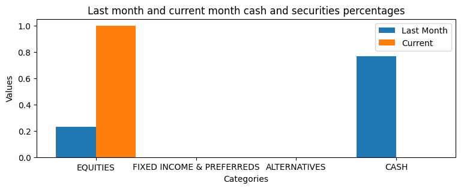
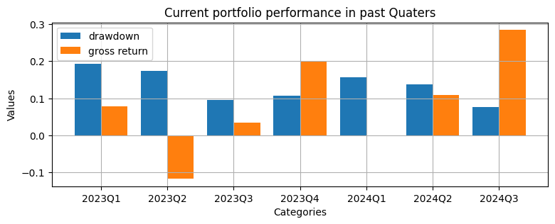
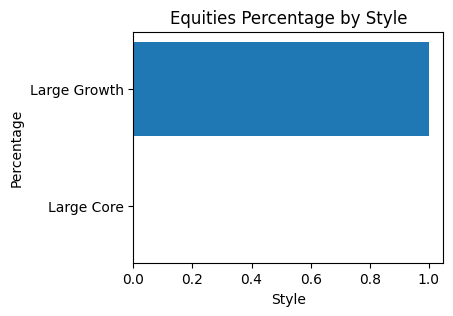

Summary
This is an analysis for your portfolio to give an overview of current holding and historical performance.
If your holding takes up less than 1% of the total value, it would not be present in the figures below. But is would still be present in the charts to give details about holding.
Cash and Securities

| Categories | Last month percentage | Current month percentage | Difference |
|---|---|---|---|
| EQUITIES | 0.2324013422 | 1.0 | 0.7675986578 |
| FIXED INCOME & PREFERREDS | 0.0 | 0.0 | 0.0 |
| ALTERNATIVES | 0.0 | 0.0 | 0.0 |
| CASH | 0.7675986578 | 0.0 | -0.7675986578 |
.png)
| instrument | percentage | gross_return(1m) | max drawdown(1m) | volatility(1m) | gross_return(3m) | max drawdown(3m) | volatility(3m) | gross_return(6m) | max drawdown(6m) | volatility(6m) |
|---|---|---|---|---|---|---|---|---|---|---|
| AAPL.O | 0.0013835849 | -0.0025928367 | 0.0611891069 | 0.0109975115 | 0.0257151896 | 0.0611891069 | 0.0123202832 | 0.2183809319 | 0.1174942509 | 0.0146892865 |
| 0700.HK | 0.3353808309 | -0.0410209663 | 0.0779398359 | 0.0199258075 | 0.1114632858 | 0.154264214 | 0.0208963737 | 0.1126388154 | 0.154264214 | 0.0188172454 |
| 1810.HK | 0.6632355842 | 0.1915789474 | 0.0442105263 | 0.0221772554 | 0.674556213 | 0.1218568665 | 0.0255887813 | 0.4617768595 | 0.2082082082 | 0.0240396252 |
Market Risk
| instrument | percentage | VaR | CVaR | risk_contribution |
|---|---|---|---|---|
| AAPL.O | 0.0013835849 | 0.0218634948 | 0.0304079154 | 5.40119e-05 |
| 0700.HK | 0.3353808309 | 0.0275103164 | 0.0403864872 | 0.2586947056 |
| 1810.HK | 0.6632355842 | 0.0353697749 | 0.0469184715 | 0.7412512825 |
The risk level of you is [{'risk_level': 'median risk'}]
Liquidity Risk
| instrument | ADTV | Holding | Holding/ADTV |
|---|---|---|---|
| AAPL.O | 31252269 | 1 | 3.2e-08 |
| 0700.HK | 25993162 | 1000 | 3.84717e-05 |
| 1810.HK | 190134000 | 30000 | 0.0001577835 |
Concentration Risk

Correlation and Tail Risk

Risk Disclosures
This report helps you better understand the risks within your portfolios held at AFE-N2N and at other financial institutions which you may have shared with us. This report presents portfolio characteristics, as well as estimates of portfolio volatility and stress test results. The report estimates volatility by analyzing the positions in your portfolio. Commonly, the higher the volatility, the riskier is the security or portfolio. Stress testing is available to illustrate how your portfolio might react under a certain market scenario or set of events.
The purpose of the Suitability Benchmark is to assist you in understanding the risk in your portfolio referenced in this report against your stated risk profile. The Suitability Benchmark may be different than the one used to compare your portfolio performance.
The Report allows you to review and compare the results of the Risk Analysis of your Current Portfolio against a Suitability Benchmark, and hypothetical Alternate Portfolio, if depicted, of positions that you may or may not own, or may not own in the same quantities. The Alternate Portfolio, if depicted in this report, including the asset allocation and particular securities in the Alternate Portfolio, are hypothetical illustrations only.
AFE-N2N is not recommending that you adopt the hypothetical Alternate Portfolio shown in this Report or any of its components. Rather, we are presenting it so that you have a basis for comparison when you consider the risk characteristics of your current holdings. After discussing with you the analyses in this Report, and your ability and willingness to take risk, your Financial Advisor can work with you to construct a portfolio that meets your needs.
The Hypothetical Results Illustrated in this Report for Your Current Portfolio and/or Alternate Portfolio are not and should NOT be construed as a guarantee of future performance. The factor models used to generate these results may contain errors or faulty assumptions.
Please refer to the Important Disclosures and Glossary at the end of this Report for additional information, including a description of the assumptions and methodologies used throughout and definitions of key terminology.